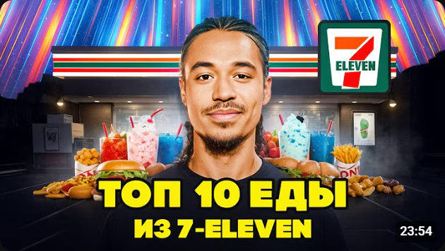
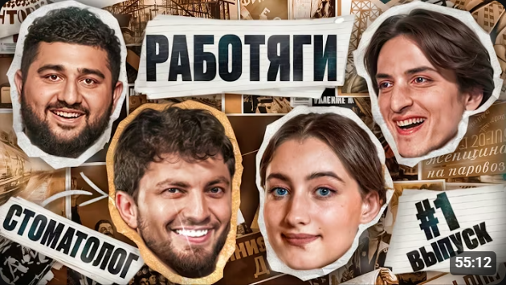
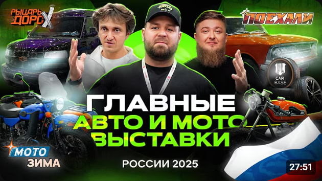
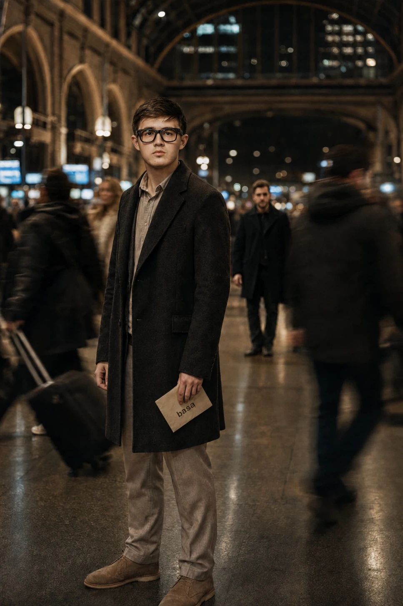

YouTube-продюсирование
Развиваю
YouTube-каналы
под ключ
От идеи и сценария до монтажа, оформления, публикации и анализа результатов.


По моим данным
Проекты BASA
Проекты BASA
Более 2 млнпросмотров видео с моими обложками
×2,5средний рост охватов
Портфолио
Избранные обложки
Моя роль в этих выпусках — дизайн превью. Нажмите на обложку, чтобы увидеть исходный скриншот.


Что не так с Астаной?


Топ-10 из 7-Eleven
Дорохов и TANK 500


Работяги. Стоматолог


Поехали Экспо × Мотозима
Выпуск на YouTubeПросмотры по предоставленным скриншотам. Показатели округлены.
Кейсы на BehanceПродюсирование
Вам — в кадр.
Остальное возьму
на себя.
Вы знаете своё дело. Я помогу превратить этот опыт в выпуски, ради которых зритель откроет ваш канал.
- С вас
- Экспертиза, съёмка и обратная связь.
- С меня
- Темы, сценарий, монтаж ваших материалов, заголовок и обложка. По согласованию — публикация и разбор статистики.
Подход
Как рождается выпуск
- 01
Исследование
Разбираю ваш канал, конкурентов и вопросы зрителей. Выбираем, для кого снимаем первый выпуск.
- 02
Стратегия
Собираю темы в рубрики. Для каждой определяю зрительский вопрос, формат и место в плане выпусков.
- 03
Производство
Пишу сценарий и ориентиры для съёмки. Вы записываете материал, я собираю из него монтаж.
- 04
Упаковка и публикация
Готовлю заголовок, обложку и описание. После согласования передаю комплект или публикую на канале.
- 05
Аналитика
По доступной статистике смотрю, откуда пришли зрители и где ушли. Выбираем, что проверить в следующем видео.
Дизайн и ИИ
Что зритель
видит первым?
«Самый дорогой поезд в Казахстане» — обещание, которое можно проверить. Халат, купе и вид из окна показывают, что именно предстоит оценить. Контрастная надпись сохраняет смысл в маленьком размере.
Перед монтажом я продумываю связку заголовка и превью. ИИ использую для эскизов и поиска композиции, а иерархию, свет и читаемость довожу вручную.
Заказать обложку ↗
Обо мне
Я — Таймураз.
Работаю под именем BASA. Около трёх лет занимаюсь графическим дизайном — от обложек YouTube до визуальной упаковки проектов. Учусь в Высшей школе бизнеса НИУ ВШЭ на программе «Маркетинг и рыночная аналитика».
Каждый выпуск начинаю с вопроса, который волнует зрителя. Из ответа рождаются история, монтаж и образ обложки.
Мой канал в Telegram ↗Мои видео на RUTUBE
Перед стартом
Есть вопрос?
Можно начать канал с нуля?
Да. Сначала обсудим, для кого вы снимаете и какую задачу решает канал. Затем подберём формат и тему первого выпуска.
Можно заказать одну обложку?
Да. Пришлите тему, рабочий заголовок и кадры, которые хотите использовать. Я предложу направление оформления.
Кто отвечает за съёмку?
Вы или ваш оператор. Я готовлю сценарий и подсказки по кадрам, а затем монтирую предоставленный материал.
Как будем работать вместе?
Начнём с переписки в Telegram. Уточним задачу, материалы и этапы согласования. Вы будете видеть сценарий, монтаж и оформление до выхода ролика.
Как рассчитывается стоимость?
Она зависит от формата, объёма исходного материала и набора задач. После обсуждения я предложу состав работ и стоимость.
Можно заранее обещать просмотры?
Точное число предсказать нельзя. На просмотры влияют спрос на тему, история канала и реакция зрителей. После выхода смотрим статистику и уточняем план.
Связаться со мной
С чего начнётся
ваш следующий выпуск?
Пришлите ссылку на канал или идею первого ролика. Обсудим, для кого снимаем и чем я могу помочь.
Обсудить проект ↗@basa69